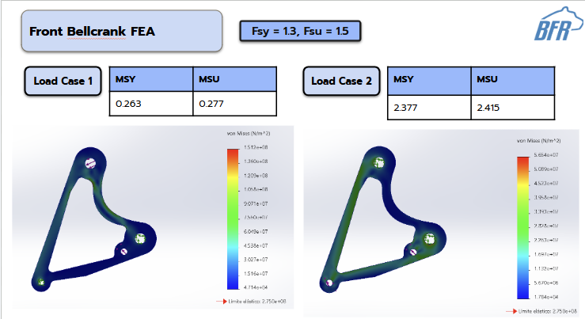
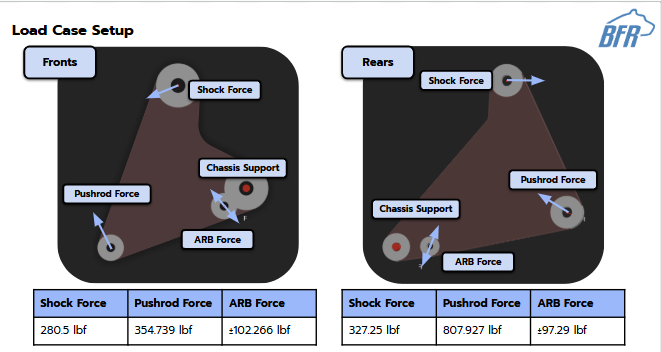
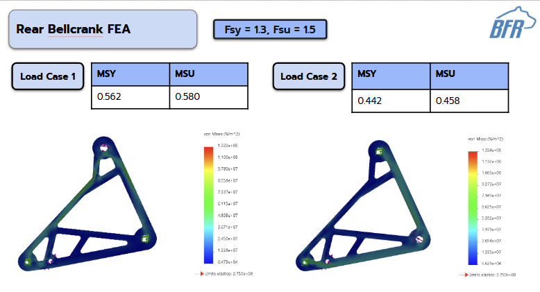
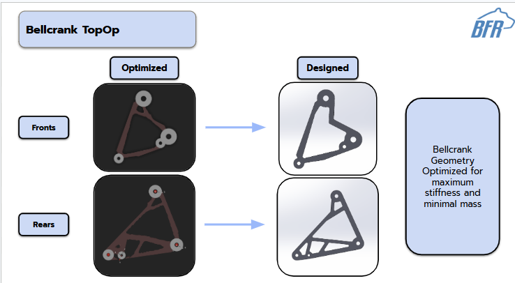
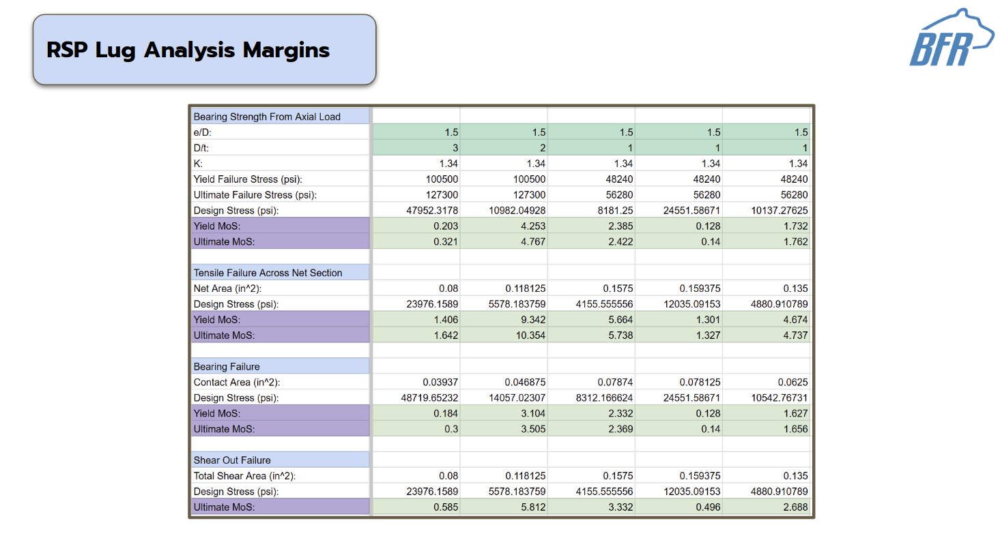

Project 01 / Formula SAE suspension
Shock Packaging
Responsible-engineer work translating suspension geometry, packaging constraints, FEA, lug analysis, and design-review feedback into manufacturable Bruin Formula Racing shock hardware.

Context
Why the package mattered.
The shock system had to fit inside the vehicle architecture without becoming a fragile afterthought. The design needed to respect upright geometry, steering travel, brake clearance, service access, and motion-ratio targets while remaining practical to fabricate and assemble.
Kyle's responsibility was to keep those constraints visible at the same time: a suspension package that looks correct in isolation is not enough if it interferes with neighboring subsystems or cannot be serviced during competition.
Challenge
Constrained geometry, real load paths.
The technical problem was not simply placing a shock. The package had to preserve motion-ratio behavior, avoid interferences, create durable hardpoints, and survive repeated dynamic loading through lugs, brackets, and welded interfaces.
- Success criteria
- Motion ratio within 5% deviation
- Constraints
- Steering, braking, chassis, aerodynamics, serviceability
- Evidence
- CAD interference checks, FEA, topology optimization, lug analysis
Process
From target to released geometry.
Map suspension geometry, motion-ratio needs, service access, and neighboring subsystem envelopes.
Build detailed SolidWorks models of bellcranks, shocks, mounts, and hardpoints.
Run FEA on critical mounting brackets and load-carrying components; use topology optimization to study efficient load paths.
Validate layout through interference checks, assembly walkthroughs, design reviews, and drawings for machined/welded parts.
Technical evidence
Analysis artifacts.
FEA and topology studies were used as design inputs rather than decorative outputs: they helped tune bracket thickness, geometry, weld considerations, and the final load path.





Outcome / reflection
What changed.
The final package gave the team a manufacturable shock system that fit the broader vehicle architecture and could be reviewed against analysis evidence. The work reinforced that Formula SAE design quality depends on interface ownership: the best part is not the most isolated part, it is the part that survives contact with the whole car.
Next time, Kyle would want even earlier physical fit checks and clearer comparison tables between candidate geometries so design-review decisions are easier to trace later.